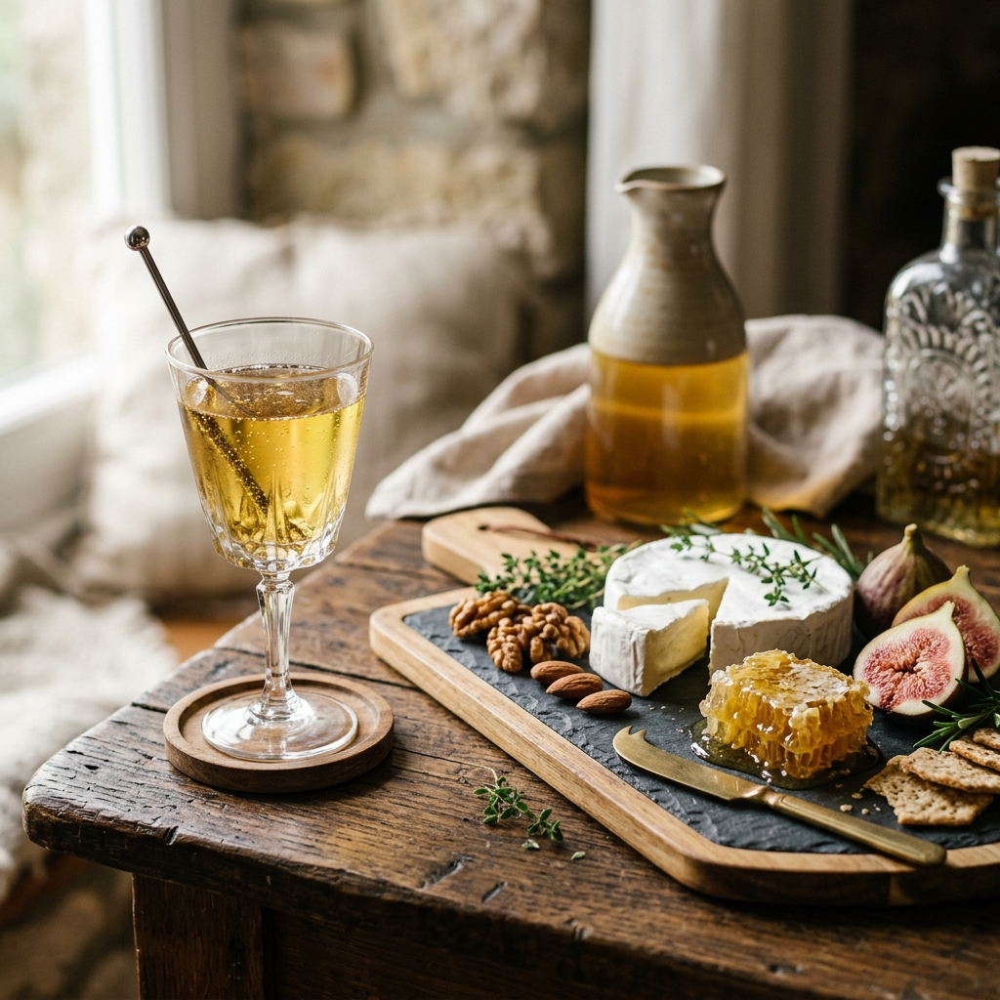

From the world's oldest fermentation traditions come a vast array of styles. Discover the unique characteristics of each honey wine category.
The purest expression of the art. Made with only honey, water, and yeast. The flavor profile is entirely dependent on the floral source of the honey—ranging from the light, citrus notes of Orange Blossom to the rich, earthy depth.
Key Profiles: Dry, Semi-Sweet, Sweet.
Shop TraditionalsMead fermented or aged with fruit. This style combines the floral honey base with the vibrant acidity and color of berries, stone fruits, or tropical favorites. Melomels are often lush, full-bodied, and visually stunning.
Key Profiles: Blackberry, Raspberry, Peach.
Shop MelomelsAncient mead enhanced with herbs and spices. Derived from the Welsh word for medicine, metheglins historically featured botanical infusions for health and flavor. Expect warm notes of cinnamon, clove, ginger, or vanilla.
Key Profiles: Spiced Chai, Lavender.
Shop MetheglinsA harmonious marriage of honey and apple juice (cider). Cysers offer a crisp, refreshing acidity that balances the natural sweetness of honey. It's the perfect bridge between traditional cider and full-bodied mead of honey.
Key Profiles: Crisp Apple, Oak-Aged Cyser.
Shop CysersA blend of honey and grapes or grape juice. Pyment combines the structure and tannins of wine with the aromatic complexity of mead. It's a sophisticated style favored by wine enthusiasts.
Key Profiles: Red Grape, White Grape Pyment.
Shop PymentsLighter, lower-alcohol meads often carbonated for a refreshing, beer-like experience. Perfect for summer afternoons, these meads highlight delicate floral notes with a crisp, bubbly finish.
Key Profiles: Sparkling Honey, Botanical Session.
Shop Sessions
Mead's incredible versatility makes it a dream for food lovers. Whether you're serving a dry traditional mead or a rich, fruit-forward melomel, there's a perfect culinary companion waiting to be discovered.
Dry traditional meads pair beautifully with aged cheddar or salty pecorino, while sweet varieties complement creamy brie and blue cheeses.
The dark fruit notes of a Blackberry Melomel are a revelation when served alongside roasted duck or gamey meats with balsamic glazes.
Warm spiced metheglins are the ultimate partner for apple crumbles, pumpkin pies, and dark chocolate truffles.